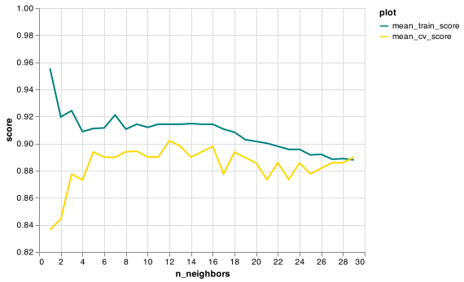

5.1. Exercises
Choosing ùëò for Your Model
Consider this graph:

Curse of Dimensionality and Choosing ùëò True or False
Hyperparameter Tuning
Instructions:
Running a coding exercise for the first time could take a bit of time for everything to load. Be patient, it could take a few minutes.
When you see ____ in a coding exercise, replace it with what you assume to be the correct code. Run it and see if you obtain the desired output. Submit your code to validate if you were correct.
Make sure you remove the hash (#) symbol in the coding portions of this question. We have commented them so that the line won’t execute and you can test your code after each step.
In the last exercise, we classified some Pokémon from the Pokémon dataset but we were not using the model that could have been the best! Let’s try hyperparameter tuning.
First, let’s see which hyperparameter is the most optimal.
Tasks:
Fill in the code for a for loop that does the following: - iterates over the values 1-50 in increments of 5. - Builds a KNeighborsClassifier model with n_neighbors equal to each iteration. - Uses cross_validate on the model with a cv=10 and return_train_score=True. - Appends the ùëò value to the n_neighbors list in the dictionary results_dict. - Appends the test_score to the mean_cv_score list in the dictionary. - Appends the train_score to the mean_train_score list in the dictionary.
We have given you code that wrangles this dictionary and transforms it into a state ready for plotting.
Finish off by filling in the blank to create a line graph that plots the train and validation scores for each value of k.
(Note: we have edited the limits of the y-axis so it’s easier to read)
Now that we have found a suitable value for n_neighbors, let’s build a new model with this hyperparameter value. How well does your model do on the test data?
Tasks:
- Build a model using
KNeighborsClassifier()using the optimaln_neighbors. - Save this in an object named
model. - Fit your model on the objects
X_trainandy_train. - Evaluate the test score of the model using
.score()onX_testandy_testand save the values in an object namedtest_scorerounded to 4 decimal places.